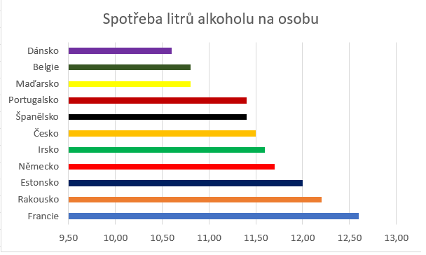

Na této stránce si můžete přečíst zajímavosti a grafy o tom, jak jsou na tom s alkoholem v jiných zemích.
V roce 2013 se rozhodla Organizace pro hospodářskou spolupráci a rozvoj vytvořit statistiku toho, kolik litrů alkoholu na osobu se vypije v určité zemi. Vznikl tak velmi zajímavý seznam zemí i s jejich spotřebou alkoholu.
Počítáno bylo s lidmi staršími 15 let.
Prvenství si získala Francie se spotřebou 12,6 l/osobu, hned za ní je Rakousko se svými 12,2 l/osobu. Česká republika skončila v hodnocení šestá, a to s 11,5 l/osobu.
Zdroj: https://cs.wikipedia.org/wiki/Seznam_st%C3%A1t%C5%AF_sv%C4%9Bta_podle_spot%C5%99eby_alkoholu
S věkovou hranicí pití alkoholu je to poněkud složitější. Některé země totiž neomezují pití alkoholu, ale jeho prodávání, jiné to zase omezují dle obsahu alkoholu. V České republice, jak je nám známo, je to jednoduché – zde si můžete alkohol koupit i pít legálně až od 18 let. Ale co jiné země?
Tyto čtyři země jsem napsal ihned zvlášť, poněvadž zde není zakázáno alkohol pít, ale prodat se může až v 18 letech.
Zde není pití alkoholu nijak omezeno (jen je nutné být pod dozorem a v soukromí).
Zde je možné pít pivo a víno již od 16 let. Koupit si ale můžete alkohol až po 18. narozeninách.
Až se vydáte na dovolenou do těchto příjemných krajů, pamatujte, že zde můžete alkohol pít i koupit již od 17 let.
Zde si můžete od 18 let koupit cokoliv s nižším podílem alkoholu, než je 22 %, vše vyšší je možné až od 20 let.
Finsko je v pravidlech úplně stejné jako Norsko, pouze mají procentuální podíl alkoholu dovolený od 18 let 23 %.
V těchti pěti státech je povolené pít i nakupovat víno a pivo od 16 let, silnější alkohol až v 18 letech.
Jak je známo, USA patří v tomto ohledu k těm nejpřísnějším. Zde je totiž pití i zakoupení alkoholu povolené až od 21 let.
Zdroj: https://www.pijsrozumem.cz/o-alkoholu-vekova-hranice/